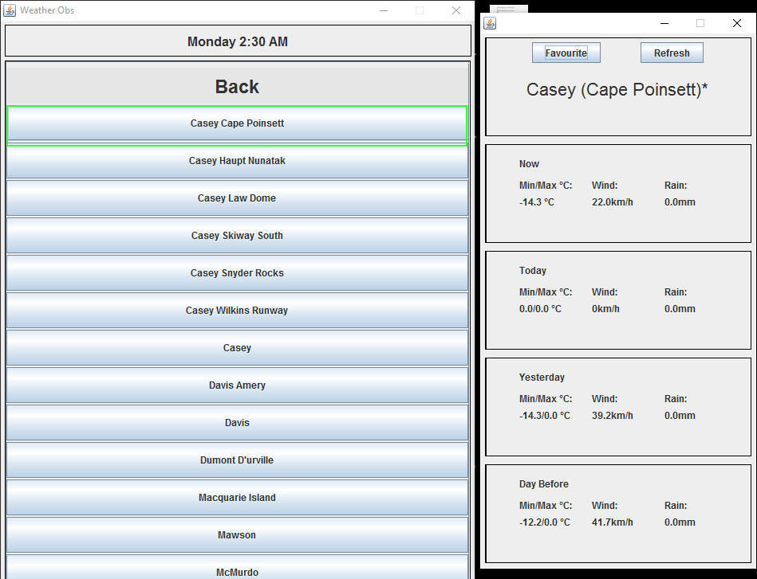
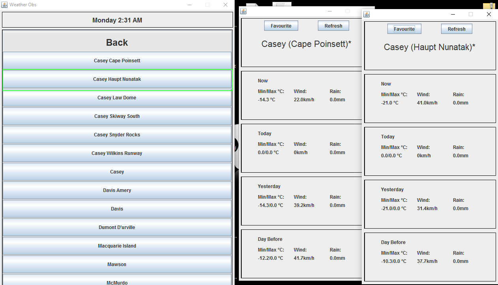
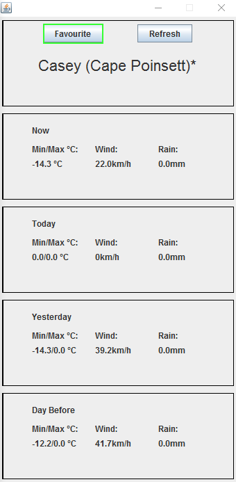

1. Download SEPTa2.jar file and input.json
2. Execute SEPTa2.jar file
A prompt window will appear at the start of the application asking what API you wish to use.
1. Select the state that your desired station belongs to.
2. Selecting a station will open a new window displaying it's recent weather information.
3. The program is capable of displaying multiple windows of weather information from different stations.
4. A station window consists of 3 tab - observations, forecasts and graphs.
5. You can zoom into the graph by dragging the mouse down on the plot, and zoom out by dragging up the plot.
1. On a station window, you can press the favourite button to favourite or un-favourite a station.
2. Favourite stations are displayed on the main menu under the favourite's section.
3. To remove a station from your favourites, simply select one and press the favourite button on the station window.
All observation data is obtained from www.bom.gov.au.
All forecast data is obtained from forecast.io and openweathermap.org.